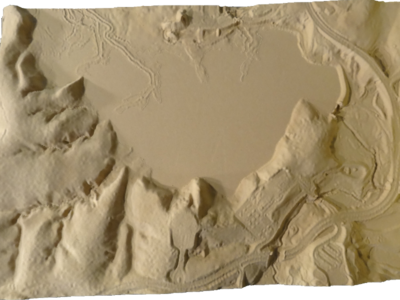
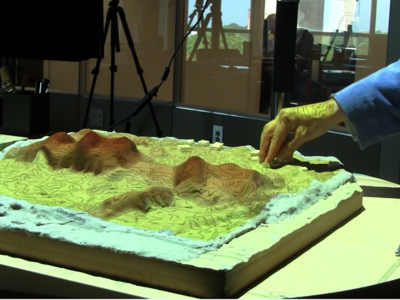
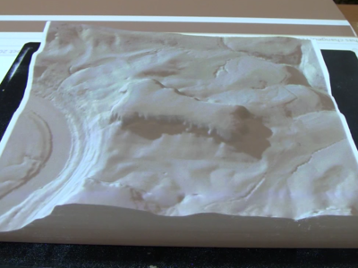
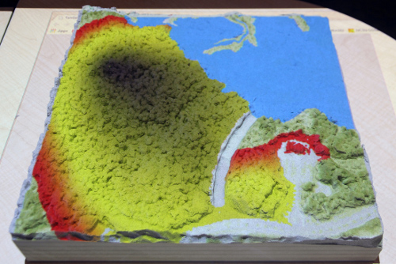
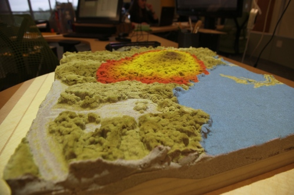
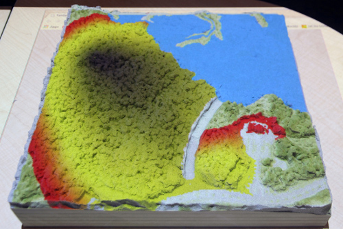
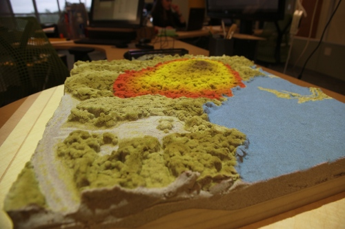
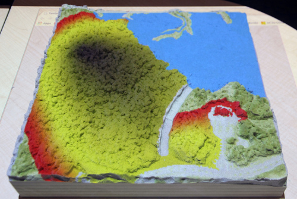
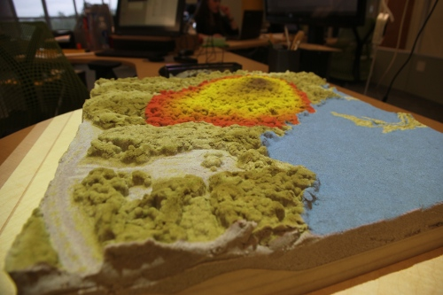

Tangible geospatial modeling and visualization system
TanGeoMS is a collaborative modeling environment for analysis of terrain changes.
We couple a scanner, projector and a physical 3D model with GRASS GIS.
We can analyze the impact of terrain changes by capturing the changes on the model,
bringing them into the GIS, performing desired analysis or simulation
and projecting the results back on the model in real-time.
TanGeoMS, as an easy-to-use 3D sketching tool, enables rapid design and scenarios testing for people
with different backgrounds and computer knowledge, as well as support for decision-making process.
TanGeoMS has been used for a variety of applications supported by the extensive
set of geospatial analysis and modeling tools available in GRASS GIS.
We have explored how dune breaches affect the extent of coastal flooding,
the impact of different building configurations on cast shadows and solar energy potential,
and the effectiveness of various landscape designs for controlling runoff and erosion.
Have a look at the older TanGeoMS materials.
The impact of terrain changes on flow accumulation in real time.
Physical models
We experiment with different materials and approaches to build models.
Automated ways to create a model of a real digital elevation model include carving with CNC router and 3D printing.
Since carved models are not malleable, we put a layer of sand on top.
We use sand enriched with a polymer which is easy to sculpt and sticks together.



Urban development scenarios
These are examples of using TanGeoMS to design new development scenarios and study their environmental impact.
Model of our study site, Lake Raleigh Woods near Centennial Campus, represents two times vertically exaggerated digital terrain model with scale of 1 : 1500.
Wildfire spread simulation
One of the applications of TanGeoMS is simulation of wildfire spread and its change based on creating firebreaks.



 




{kind=link}
{kind=link}
{kind=link}
{kind=link}
{kind=link}
{kind=link}
{kind=link}
{kind=link}
{kind=link}
{kind=link}
{kind=link}